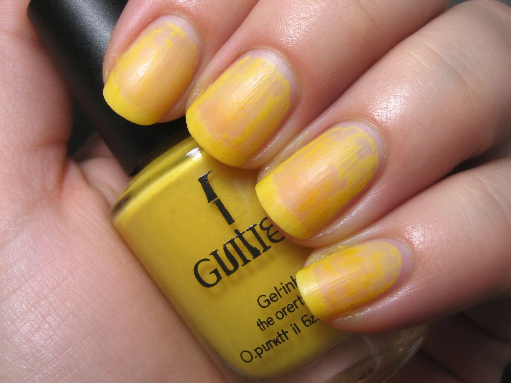

美甲指甲變黃是什麼？入門入門攻略
指甲變黃多半是『深色染色』或『煙漬』，打底膠、深色別留太久、卸甲要乾淨，就能慢慢白回來。
指甲變黃原理與辨識重點：美甲師不說的多因染色或煙
深色凝膠如果沒上底膠、或留太久，色素會滲進甲面造成泛黃；抽菸、喝茶、吃咖哩也會染黃。這通常不是『病了』，是『染色』。
誰適合做指甲變黃？變黃困擾對號入座
這套做法主要適合「變黃困擾」的場合與族群。如果你是通用美甲的愛好者，或正處在入門階段的學習者，都很值得先把它認識起來——它會是你判斷其他款式的地基。
指甲變黃美甲施作步驟：染色與煙漬
打底膠隔離色素 → 深色不超過 3–4 週 → 卸甲要徹底 → 日常少碰染色物 → 擦硬甲油幫助修護。
指甲變黃優缺點分析：美甲持久度與傷甲評估
| 面向 | 說明 |
|---|---|
| 好上手 | 入門階段就能掌握，是通用流派的入門招牌 |
| 辨識度高 | 靠「多因染色或煙」一眼認得出，成品是白回來 |
| 變化多 | 可延伸出多種「變黃困擾」的變化款 |
| 注意 | 「多因染色或煙」與包邊沒顧好，持久度會打折 |

指甲變黃新手雷區：底膠要打與常見錯誤
注意：變黃後別急著再上深色蓋住，那只會更黃。先讓指甲『休息＋補水』，白回來再上色。
指甲變黃和其他美甲做法的差別比較
指甲變黃最常被拿來和「脆甲、指甲分層」搞混。簡單分：指甲變黃更執著在「多因染色或煙」這一個細節上，而隔壁那幾種把重點放在別的地方——同一個美甲領域、不同的側重點，看多了自然分得開。
指甲變黃美甲常見問題 FAQ
Q：初學者怎麼認識指甲變黃？ A：先看白回來這個成品，找「多因染色或煙」在哪裡，再對照上面的說明，重複兩三次就有直覺了。
Q：指甲變黃和我平常做的美甲有什麼關係？ A：它是「變黃困擾」裡很常用的一環，很多通用款式都吃它的技巧。會了它，你看美甲的判斷力會明顯變好。
Q：一定要買很貴的器材嗎？ A：不用。先用入門器材把「多因染色或煙」練穩，再看要不要升級。技術永遠比器材重要。
Q：哪種場合最適合用指甲變黃？ A：需要「變黃困擾」氛圍的場合最合適。日常或特殊活動都能駕馭，重點是配色與厚薄要掌握好。